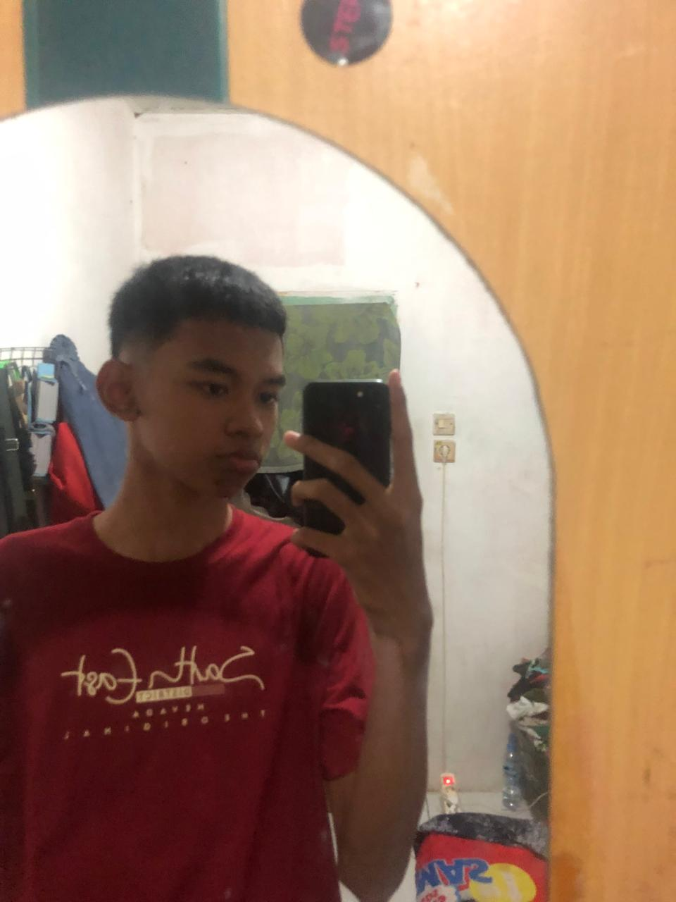

IT Network Student & Tech Enthusiast
Bogor, 03 April 2009
Male
Jalan Lodaya 2 Cilibende RT003/RW005
Network Engineering & System Support
Experienced in configuring MikroTik routers, including IP addressing, DHCP, NAT, routing, and firewall to build stable and secure network connections.
Skilled in assembling, upgrading, and troubleshooting computer hardware to ensure reliable system performance.
Capable of creating, installing, and testing Fiber Optic (FO) and UTP cables for stable and efficient network connectivity.